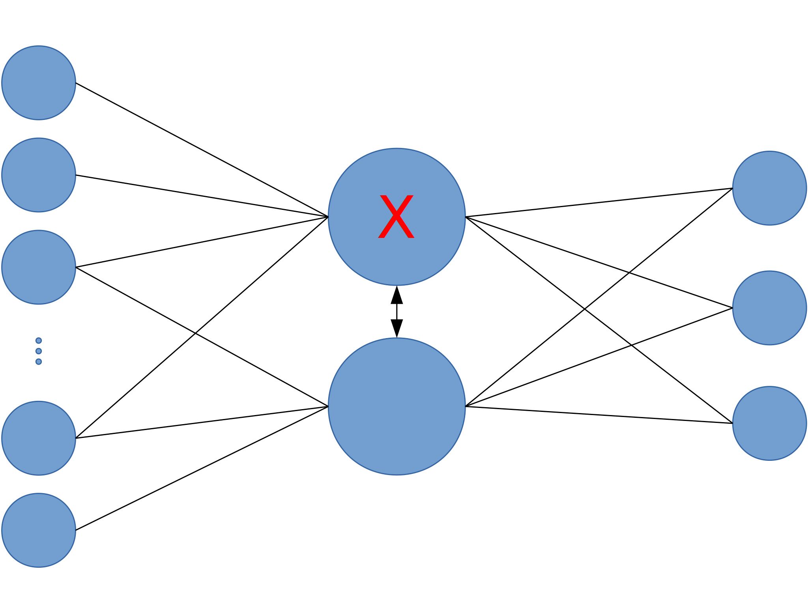
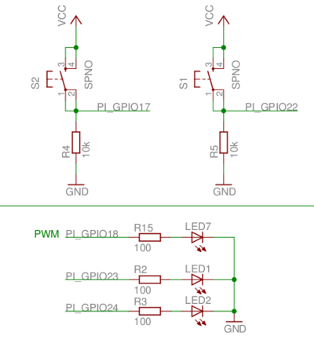
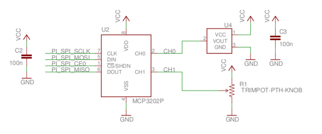
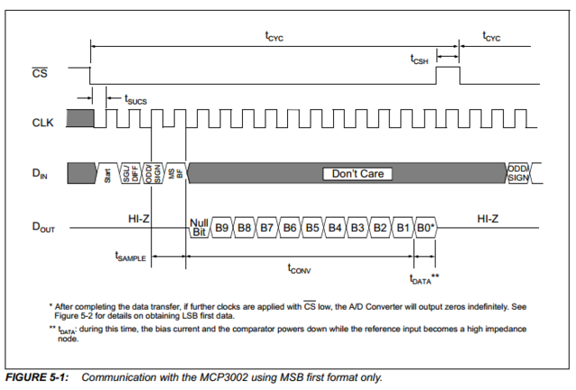

Controls
- Keys (when running on the RPi)
- F1 - Toggle between presentation and IEx
- F2/F3 - Enlarge/reduce IEx font size
- F5 - Reload presentation
- Arrow keys - Slide navigation
- Notes
- If focus is lost in the presentation, hit F5
- Use
#iex:breakif in trouble in shell Slides.goto(slide_number)
Intro to Elixir on the Raspberry Pi
MoCo Programming Junkies 5/19/14
Frank Hunleth
@fhunleth
Agenda
- Motivating Elixir and the Erlang VM
- Intro to Elixir
- Interacting with Hardware on the RPi
- How this presentation was made
Erlang VM Use Case
Telecom Switches

Erlang VM Use Case
Telecom Switches
Erlang VM Use Case
Telecom Switches
Current Use Cases
Internet Plumbing
Current Use Cases
Internet of Things?
Erlang VM Properties
- Fine grain parallelism
- Message passing architecture
- Distribution support built-in
- Soft real-time GC (tied to processes)
- Well-tested, mature technology
- Reliability/fault tolerance focus
- Easy integration with other languages
Why Embedded? Why Now?
- Faster processors - can use higher level languages
- More third-party libraries - need integration and monitoring
- Message passing historically common architecture in embedded
- More network connectivity; distributed architectures
- Many devices are unattended or remote - reliability important
Erlang VM Languages
- Erlang (of course)
- Lua
- LFE (Lisp Flavored Erlang)
- Joxa (LISP)
- Elixir
Elixir
“Elixir is a functional, meta-programming aware language built on top of the Erlang VM. It is a dynamic language that focuses on tooling to leverage Erlang's abilities to build concurrent, distributed and fault-tolerant applications with hot code upgrades.”
Basic Types
# Integers
iex> 1 + 2 + 3
6
# Floats
iex> 1 / 3
0.333333333333333
# Atoms
iex> :hello
:hello
# Boolean
iex> 1 == 2
false
iex> :true == true
true
More Types
# Tuples
iex> {1, 2 + 3}
{1, 5}
# Lists
iex> [1, :lookatme, {1, 2, 3}]
[1, :lookatme, {1, 2, 3}]
iex> [1, [2, 3]]
[1, 2, 3]
iex> [1, 2] ++ [3, 4]
[1, 2, 3, 4]
iex> length([1,2,3])
3
Strings
# Strings are just like you'd expect unless you program Erlang
iex> "This is a UTF-8 encoded string"
"This is a UTF-8 encoded string"
iex> "Two times three is #{2 * 3}."
"Two times three is 6."
iex> String.length("hello")
5
# Strings are binaries underneath
iex> << ?H, ?e, ?l, ?l, ?o >>
"Hello"
# Erlang APIs like lists of characters
iex> [?H, ?e, ?l, ?l, ?o, ?, , ? , ?E, ?r, ?l, ?a, ?n, ?g]
'Hello, Erlang'
Naming
- Functions start with a lowercase letter
- Modules start with an uppercase letter
- Function naming conventions:
- Words separated with underscores
- A "?" means the function returns true or false
- An "!" means the function throws an exception on error
Key-value Containers
# This is a keyword list. It is used in function calls.
iex> x=[{:apple, 1}, {:banana, 2}]
[akey: 1, bkey, 2]
iex> Keyword.get(x, :apple)
1
iex> Keyword.put(x, :banana, 0)
[banana: 0, apple: 1]
# This is a map. Any type can be a key, and it's not a list.
iex> mymap = %{ :apple => 1, :banana => 2 }
%{apple: 1, banana: 2}
iex> mymap.apple
1
iex> %{mymap | :apple => 0}
%{apple: 0, banana: 2}
The Dict Interface
- All dictionary-like things implement the
Dictinterface - Works for keyword lists and maps
HashDictalso implements the interface and supports bigger dictionaries
iex> d = HashDict.new()
#HashDict<[]>
iex> d = Dict.put(d, :apple, 1)
#HashDict<[apple: 1]>
iex> d = Dict.put(d, :banana, 3)
#HashDict<[apple: 1, banana: 3]>
iex> Dict.get(d, :apple)
1
defstruct
- Key-value data structure
- Efficient representation and operation
- Compile-time checked structures (new)
- Used for polymorphism in Elixir (new)
defstruct
iex> defmodule Person do
...> defstruct name: nil, age: 0
...> end
{:module, Person, <<70, 79, 82, 49, 0, 0, 4, ...>>, {:__struct__, 0}}
iex> me = %Person{name: "Frank"}
%Person{age: 0, name: "Frank"}
iex> me.__struct__
Person
iex> me.name
"Frank"
iex> me = %{me | :age => 39}
%Person{age: 39, name: "Frank"}
Functions
iex> defmodule Greeter do
...> def hi(name) do
...> IO.puts("Hello, #{name}!")
...> end
...> end
{:module, Greeter,
<<70, 79, 82, 49, 0, 0, 5, 52, 66, 69, 65, 77, 65, 116, 111, ...>>,
{:hi, 1}}
iex> Greeter.hi("Frank")
Hello, Frank!
:ok
iex> Greeter.hi "Frank"
Hello, Frank!
:ok
Anonymous Functions
iex> greeter = fn(name) ->IO.puts("Hello, #{name}!" end
#Function<6.106461118/1 in :erl_eval.expr/5>
iex> greeter.("Frank")
Hello, Frank!
:ok
The Best Function in the World
iex> h
IEx.Helpers
Welcome to Interactive Elixir. You are currently seeing the documentation
for the module IEx.Helpers which provides many helpers to make Elixir's
shell more joyful to work with.
This message was triggered by invoking the helper h(), usually referred to
as h/0 (since it expects 0 arguments).
There are many other helpers available:
...
Writing your own docs
iex> defmodule Greeter do
...> @moduledoc "This is the Greeter module!"
...> @doc "Say hi"
...> def hi(name) do
...> IO.puts "Hello, #{name}"
...> end
...> end
{:module, Greeter, <<70, 79, 82, 49, 0, 0, 5, 104, 66, ...>>, {:hi, 1}}
iex> h Greeter.hi
def_hi(name)
Say hi
Pattern Matching
- The
=means match - Elixir tries to make both sides of
=match - Variables can be rebound
iex> {x, y} = {1,2}
{1, 2}
iex> x
1
iex> y
2
iex> x = 5
5
Pattern Matching
iex> {x, y} = {1,2}
{1, 2}
# ^ before a variable prevents rebinding
iex> {^x, y} = {2,2}
** (MatchError) no match of right hand side value: {2, 2}
# Use _ if you don't want to bind part of the match
iex> {x, _} = {1,2}
{1, 2}
Pattern Matching in Functions
iex> defmodule Math do
...> def fact(0) do 1 end
...> def fact(n) do n * fact(n-1) end
...> end
{:module, Math, <<70, 79, 82, 49, 0, 0, 4, 124, 66, 69, 65, ...>>,
{:fact, 1}}
iex> Math.fact(5)
120
iex> Math.fact(25)
15511210043330985984000000
Control flow
iex> x = 4
4
iex> if x < 5 do
...> "Yes"
...> else
...> "No"
...> end
Yes
# When you have multiple if conditions to check
iex> cond do
...> x == 1 -> "one"
...> x == 2 -> "two"
...> x == 4 -> "four"
...> end
"four"
Pattern Matching Version
- Sometimes it's useful to pattern match inside functions
- Patterns can be fairly complicated
- Binding supported
iex> case x do
...> 1 -> "one"
...> 2 -> "two"
...> value -> "Got a #{value}"
...> end
"Got a 4"
Processes and Messages
iex> defmodule Greeter do
...> def loop do
...> receive do
...> {sender, name} -> send sender, {:ok, "Hello, #{name}"}
...> loop
...> :quit -> IO.puts "Bye bye"
...> end
...> end
...> end
{:module, Greeter, <<70, 79, 82, 49, 0, 0, 5, 236, 66, ...>>, {:loop, 0}}
iex> pid=spawn(Greeter, :loop, [])
#PID<0.304.0>
iex> send pid, {self, "Josh"}
iex> flush
{:ok, "Hello, Josh"}
:ok
GenServer
spawn/3, send/2, receiveusually not used directly- Elixir wraps these with
GenServer(uses the Erlanggen_server) - Features:
- Message handling via callbacks
- Automatic process name registration
- Help with process supervision
- Hot code update
- Part of the OTP Framework from Erlang
Hardware - Erlang Demo Board
- Open hardware demo board by Omer Kilic
- Connects to Raspberry Pi's expansion port
- Supports GPIO, PWM, I2C, and SPI interfaces
GPIO
GPIO Outputs
iex> Gpio.start_link(23, :output)
{:ok, #PID<0.96.0>}
iex> Gpio.write(23, 1)
:ok
iex> Gpio.write(23, 0)
:ok
# The not functional way of blinking
iex> for i <- 1..5 do
...> Gpio.write(23, 1)
...> :timer.sleep 500
...> Gpio.write(23, 0)
...> :timer.sleep 500
...> end
GPIO Inputs
iex> Gpio.start_link(17, :input)
{:ok, #PID<0.115.0>}
iex> Gpio.read(17)
0
# Press button
iex> Gpio.read(17)
1
GPIO Interrupts
iex> Gpio.start_link(17, :input)
{:ok, #PID<0.188.0>}
iex> Gpio.set_int(17, :both)
:ok
# Press button
iex> flush
{:gpio_interrupt, 17, :falling}
{:gpio_interrupt, 17, :rising}
{:gpio_interrupt, 17, :falling}
Erlang Distribution
# On another computer
$ iex --sname me --cookie democookie --remsh demo@nerves
Erlang/OTP 17 [erts-6.0] [source-07b8f44] [64-bit] [smp:8:8] [async-threads:10] [kernel-poll:false]
Interactive Elixir (0.13.2) - press Ctrl+C to exit (type h() ENTER for help)
iex(demo@nerves)1> Gpio.write 23, 1
:ok
iex(demo@nerves)2> Gpio.write 23, 0
:ok
SPI Bus
Analog to Digital Converter
SPI Bus - Potentiometer
# Load the driver
iex> :os.cmd('modprobe spi-bcm2708')
# Start the SPI process (bus 0, chip select 0)
iex> Spi.start_link(:"spidev0.0")
{:ok, #PID<0.104.0>}
# Get the value from the potentiometer (channel 1 on MCP3002)
iex> result = Spi.transfer(:"spidev0.0", <<0x74, 0x00>>)
<<1, 219>>
iex> <<_::[size(4)], counts::[size(12)]>> = result
<<1, 219>>
iex> volts = counts / 1024 * 3.3
1.5082031249999999
SPI Bus - Thermometer
# Get the value from the thermometer (channel 0 on MCP3002)
iex> result = Spi.transfer(:"spidev0.0", <<0x64, 0x00>>)
<<0, 212>>
iex> <<_::[size(4)], counts::[size(12)]>> = result
<<0, 212>>
iex> volts = counts / 1024 * 3.3
0.6832031249999999
iex> celsius = 25 + 100 * (volts - 0.7)
23.320312499999996
iex> farenheit = 32 + celsius * 9 / 5
73.9765625
How The Presentation Was Built
- Nerves
- Overall packaging of the Linux kernel, libraries, and programs
- Focused on Erlang and Elixir embedded applications
- Qt
- Webkit-based browser for showing the slides
- GUI widget for building the VT100 emulator for IEx
- Elixir-ALE - GPIO/SPI/I2C interface
- dtach - redirects the IEx prompt through Unix pipes so Qt can access it
- reveal.js - presentation framework
Intro to Elixir on the Raspberry Pi
MoCo Programming Junkies 5/19/14
Frank Hunleth
@fhunleth